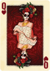
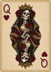
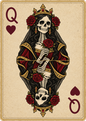
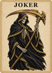
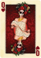
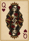
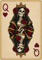
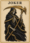
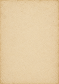
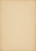

Queen of Hearts · anchor approval
Four generated layers only: Queen A, Queen B, shared paper material and Grim Reaper. Candidate B is recommended for its simpler crown and fewer small gold shapes. No art has been installed.
Native 1× proof: open at 100% browser zoom. The cards below have fixed CSS dimensions; originals are deliberately not enlarged here. Q and heart indices are authored SVG paths. Court mirroring is deterministic, not generated.
Desktop · exactly 86×121 CSS px

Current QH
A · ornate
B · simpler crown
Reaper candidatePortrait · exactly 60×85 CSS px

Current QH
A · ornate
B · simpler crown
Reaper candidateShared material · no generated lettering or pips

86×121
60×85
Sources: Queen/Reaper illustrations 1024×1536 RGBA; paper 1058×1487 RGB. Final template exports 512×720. These are approval candidates, with intentional crop and exact 180° repetition. Tiny crosshatching vanishes at final size; silhouette, skull, crown and vector suit remain the readability targets.
Queen A source · Queen B source · Reaper source · Paper source
STOP: no other court, ace, frame, prop or background will be generated until the Queen anchor is approved.